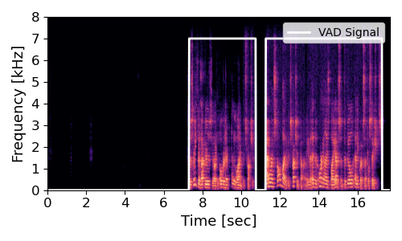
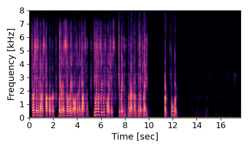

| Mix | Clean | Sep-TFAnetVAD Output | Conv-Tasnet Output |
|---|---|---|---|
|
overlap ratio = 36%:
1st as a paris stt broker later as a celebrated author and yachtsman he went on frequent voyages construction and were installed by the construction company. that had been organized by edison to build and equipped central stations. |
speaker 1:
1st as a paris stock broker later as a celebrated author and yachtsman he went on frequent voyages to britain america the mediterranean speaker 2: the street conductors were of the overhead pole line construction and were installed by the construction company that had been organized by edison to build and equipped central stations |
speaker 1:
1st as a paris stock broker later as A celebrated author and yachtsman he went on frequent voyages to britain america the mediterranean speaker 2:  the street conductors were ** the overhead **** line construction and were installed by the construction company that had been organized by edison to b uild and equipped central stations |
speaker 1:
 1st as a paris stock broker later as a celebrated author and yachtsman he went on frequent voyages to britain america the mediterranean ITS ALL ABOUT IT speaker 2: the AS A HE WENT ON street conductors **** OR the OVERHANG THING line construction *** were ins talled by the construction company that had been organized by edison to build and equipped central stations |
overlap ratio = 45%:

it he has no traditions to bind him or guide him and his impulse to break away from the occupation Himself but he gives us different sorts of Work according as he fits us for it and calls us to it |
speaker 1:
he has no traditions to bind him or guide him and his impulse is to break away from the occupation his father has followed and make a new way for himself. speaker 2: we can all be servants of god wherever our lot is cast but he gives us different sorts of work according as he fits us for it and calls us to it. |
speaker 1:
he has no traditions to bind him or guide him and his impulse IS to break away from the occupation his father has followed and make a new way for himself speaker 2: we can ONLY be servants of god wherever our LIFE is TEST but he gives us different sorts of work RECORDING as he fits us for it and calls us to it |
speaker 1:
he has no traditions to bind him or guide him and his impulse to break away from the occupation his father has followed and **** * *** *** for himself speaker 2: HE HAS NO AND THIS IS we can all THE servants of god wherever *** *** * * **** but he gives us different sorts of work RECORDING as he fits us for it and calls us to it |
overlap ratio = 32%:
It is a gleaner Bringing down her one sheaf of corn to an Old Water Mill itself Mossy in rent Scarcely able to get its stones to and think i showed him by my mode of address that i did not bear any grudge as to my individual self |
speaker 1:
it is a gleaner bringing down her one sheaf of corn to an old watermill itself mossy and rent scarcely able to get its stones to turn speaker 2: as i spoke i made him a gracious bow and i think i showed him by my mode of address that i did not bear any grudge as to my individual self. |
speaker 1:
it is a gleaner bringing down her one sheaf of corn to an old water mill itself mossy in rent scarcely able to get its stones to TIME ANY GRUDGE speaker 2: RIGHT as YOU spoke I made him a gracious bow and I think i showed him by my mode of address that i did not bea r any PLEDGE as to my individual self |
speaker 1:
it is a gleaner bringing down her one sheaf of corn to an old water mill IT OFF mossy AND rent scarcely able to get its STONE I THINK I SHOWED HIM BY MY MOTIVE AS to MY speaker 2: ITS SO I made him a gracious bow and ***** * ****** *** ** ** **** of address that i did not bear any grudge as to my individual self |